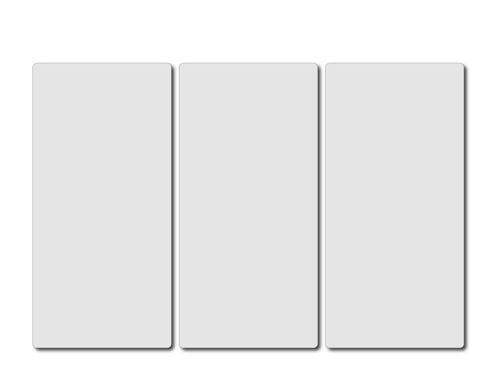

Section
Encounter: what is here?
Intention: what is it doing?
Process: how did it become this?
Context: where does it sit?
Reflection: what does it open up?
Purpose
A statement about what the work is—what is the viewer meeting?
A statement about what work is trying to do—what question, concern, or impulse began the work?
An insight into how the work was made—how does its materiality matter?
A statement about where it is situated—what does it connect to, or what spaces or ideas does it emerge from?
An insight into reading or engaging with the work—what can the viewer take away from the encounter?
Prompt
What will the audience first notice or understand about the work?
What were you trying to investigate, express, test, or understand?
What materials, methods, experiments, or decisions shaped the work?
Does it relate to place, memory, research, culture, other artists, or a broader themes or issue?
What changed through the process of making the work? What might the audience notice, feel, question, or carry away from the encounter?